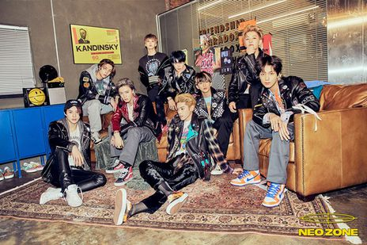
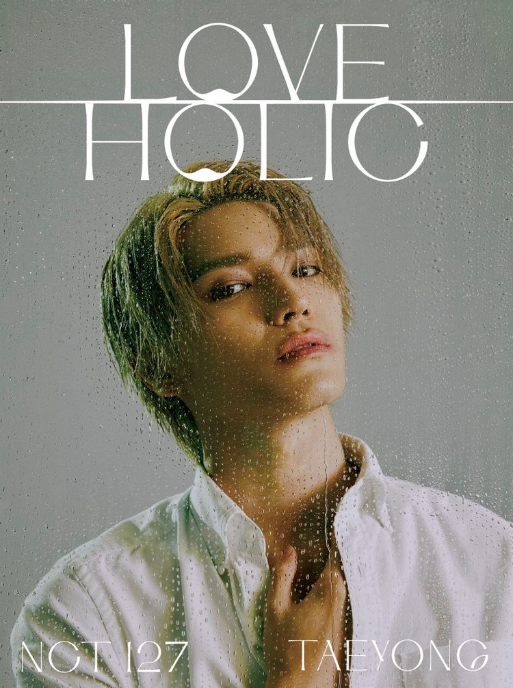
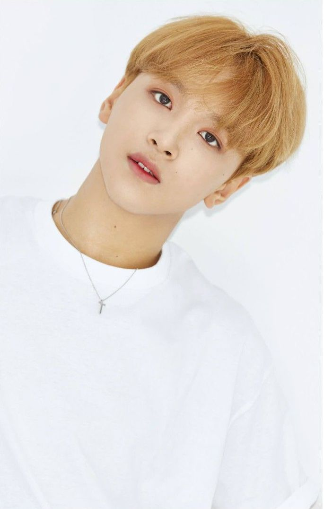

아시는 분도 있을 것이고, 모르시는 분들도 있을 것입니다.
NCT는 Neo Culture Technology를 줄인 말로 '엔시티'라고 부릅니다.
데뷔일은 2016년 4월 9일로, 정규 1집 'NCT 2018 emphathy'로 데뷔하였습니다.
NCT는 현재 총 23명으로 대한민국 최초로 '무한확장' 체제를 적용하였습니다.

NCT는 NCT U, NCT 127, NCT dream, WayV으로 나누어 활동합니다. 체제를 이해하기 어려우니 동영상을 첨부하겠습니다.
NCT 127은 서울의 경도 127을 따온 것입니다. 이름 그대로 서울에서만 활동하는 유닛입니다.
▲NCT 127
NCT U는 곡의 컨셉, 장르, 멤버 간 밸런스에 따라 어울리는 멤버들을 선정합니다. 때문에 멤버 구성이 매번 달라지는 그룹입니다.
이를 다르게 해석하면 고정적인 리더, 메인 포지션, 센터가 존재하지 않는 그룹이기도 합니다.

▲NCT U
NCT dream은 NCT를 구성하는 멤버들 중 10대인 멤버들로만 구성된 유닛입니다.
하지만 이제는 10대 멤버가 없기 때문에 10대 타이틀만 없이, 전에 NCT dream을 구성한 멤버들로 계속 이끌어나갑니다.

▲NCT dream
마지막으로 WayV입니다. WayV는 멤버 교체가 없는 고정 유닛이며 중화권 멤버들이 중화권에서 활동합니다.

▲WayV
NCT 라는 그룹 체제를 설명 했으니 NCT 멤버에 대한 간략한 표를 본 후 넘어가겠습니다.
NCT U는 모든 멤버들이 소속되어 있는 것을 전제한 표입니다. (표 테두리 색은 NCT 상징색인 pearl neon champagne색 입니다.)
| 이름 | 생년월일 | 국적 | 소속 유닛 | 사진 |
| 태일 | 1994.06.14 | 대한민국 | NCT 127 | |
| 쟈니 | 1995.02.09 | 미국 | NCT 127 | |
| 태용 | 1995.07.01 | 대한민국 | NCT 127 |  |
| 유타 | 1995.10.26 | 일본 | NCT 127 | |
| 쿤 | 1996.01.01 | 중국 | WayV | |
| 도영 | 1996.02.01 | 대한민국 | NCT 127 | |
| 텐 | 1996.02.27 | 태국 | WayV | |
| 재현 | 1997.02.14 | 대한민국 | NCT 127 | |
| 윈윈 | 1997.10.28 | 중국 | NCT 127, WayV | |
| 정우 | 1998.02.19 | 대한민국 | NCT 127 | |
| 정우 | 1998.02.19 | 대한민국 | NCT 127 | |
| 루카스 | 1999.01.25 | 홍콩 | NCT 127, WayV | |
| 마크 | 1999.08.02 | 캐나다 | NCT 127, NCT dream | |
| 샤오쥔 | 1999.08.08 | 중국 | WayV | |
| 헨드리 | 1999.09.28 | 마카오 | WayV | |
| 런쥔 | 2000.03.23 | 중국 | NCT dream |  |
| 제노 | 2000.04.23 | 대한민국 | NCT dream | |
| 해찬 | 2000.06.06 | 대한민국 | NCT 127, NCT dream |  |
| 재민 | 2000.08.13 | 대한민국 | NCT dream | |
| 양양 | 2000.10.10 | 대만 | WayV | |
| 쇼타로 | 2000.11.25 | 일본 | NCT U | |
| 성찬 | 2001.09.13 | 한국 | NCT U | |
| 천러 | 2001.11.22 | 중국 | NCT DREAM | |
| 지성 | 2002.02.05 | 한국 | NCT DREAM |
여기를 클릭하시면 두번째 관심사의 내용이 이어집니다!